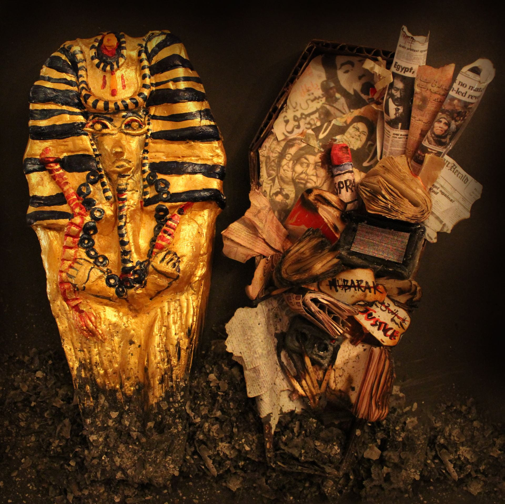

2011-Present; Here Lies the Truth

“Hear lies the truth and honesty of the media, May the buried reality rest in peace”
The civil unrest period I chose to base this miniature book project on, was the Egyptian Revolution of 2011. A little background on the unrest: The uprising was due to the grave unemployment and poverty rates in the country. The heat was elevated due to the extensive restrictions imposed on the public with regards to freedom of expression, especially political. A state of Emergency was unlawfully imposed on the public of Egypt by the authoritarian government. The incident that sparked this revolution was the self-immolation of a man in front of the parliament as a protest against the dire unemployment rates. Which led to violent restrictions of protest and the citizens were stripped of their freedom of speech. Media was heavily censored and the realities were buried. For this reason, I crafted my book on the death of true media and people’s opinions during this period. I moulded a traditional golden and embellished Egyptian coffin to depict the covering up/burial of the reality with false richness. Another reason I used a Pharaoh, is because it is part of ancient Egyptian belief that the souls buried in this method will some day be reborn. Similarly, the citizens of Egypt hoped that one day the truth will be discovered. Inside the coffin, are all the books, articles, uncensored opinions on the military rule given by the public which was suffocated by the government. The book is burned from the bottom and will rest on a pile of ash to symbolise the first incident of Self-sacrifice of the Egyptian man who burned himself as a protesting symbol. I printed out different news articles on the situation of the unrest during that period.I also made miniature books, and moulded miniature models to represent modes of expression. Like the television set gone static and the broken cassette. Also, I attached a tiny spray paint can along with political graffiti art of Egypt to emphasise on one of the most popular and brave modes of political expression that arose during this period of censorship. On the outside I have embellished the cast of the Pharaoh with gold paint to symbolise the false imagery of wealth put up by the government to cover up the dire situation.